Climatização
4Equipamentos e soluções para conforto térmico em ambientes comerciais, industriais e prediais.
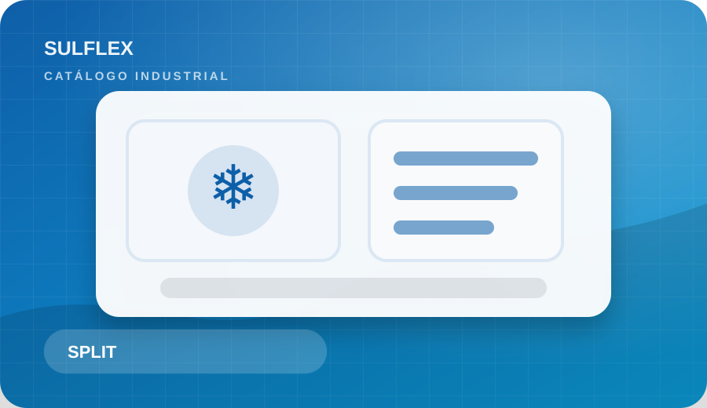
Ar-condicionado Split Hi Wall
Modelos para salas, escritórios e ambientes menores, com opções frio e quente/frio.
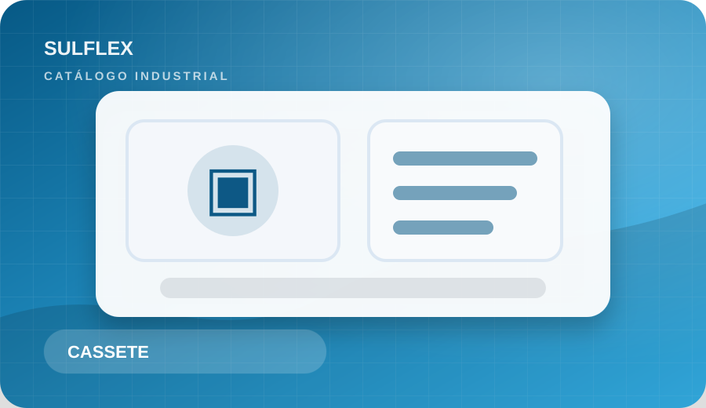
Cassete e Teto/Piso
Opções indicadas para ambientes amplos, recepções, lojas, salas técnicas e áreas corporativas.
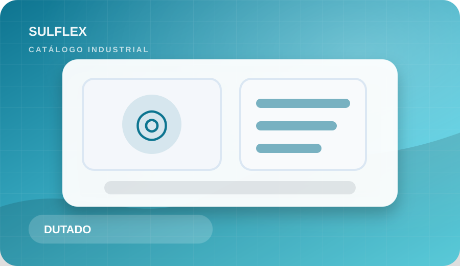
Dutado e Multi Split
Solução para vários ambientes com acabamento discreto e distribuição eficiente do ar.
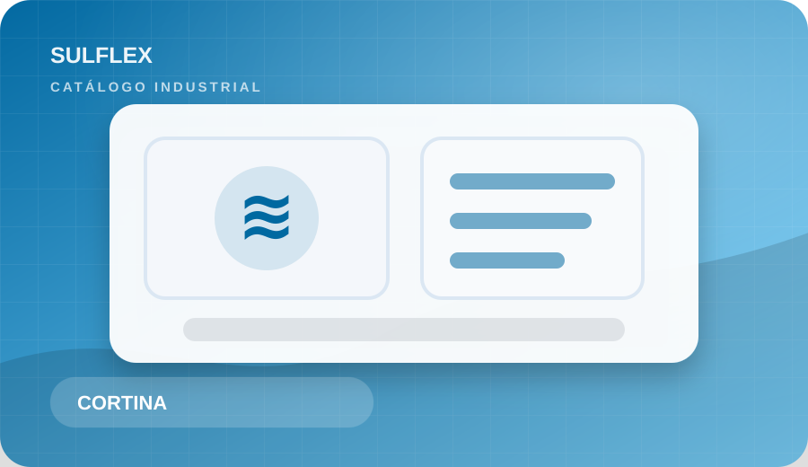
Cortina de Ar
Barreira de ar para portas de acesso, lojas, docas e áreas com circulação constante.
Carpintaria
3Produtos e serviços para apoio predial, ajustes estruturais leves, mobiliário técnico e acabamento.
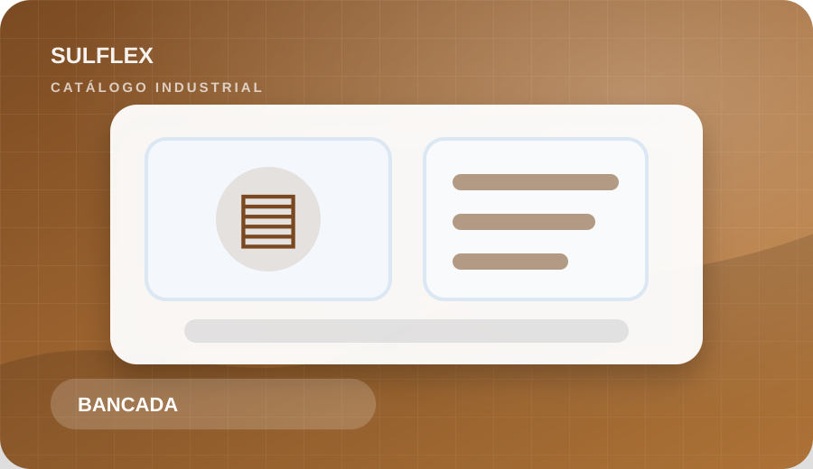
Bancadas e Mesas Técnicas
Fabricação ou adequação de bancadas para manutenção, oficinas, almoxarifados e áreas operacionais.
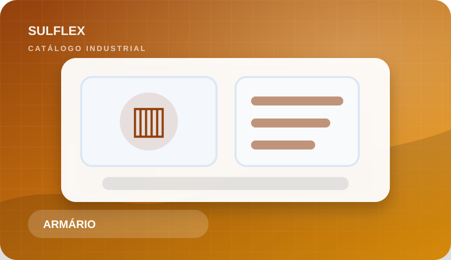
Armários e Prateleiras
Organização de ferramentas, materiais e documentos em ambientes industriais e administrativos.
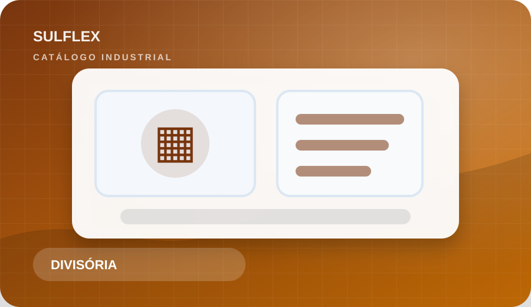
Divisórias e Acabamentos
Ajustes em ambientes internos, reforços simples, painéis e acabamentos funcionais.
Solda
3Serviços para reparos, reforços e fabricação de peças metálicas em uso industrial e predial.
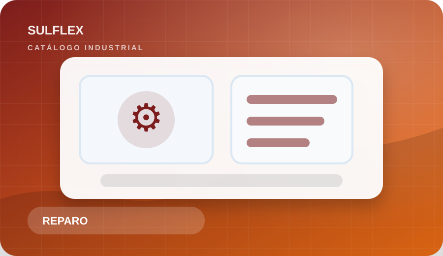
Reparos Metálicos
Correção de suportes, bases, grades, proteções e estruturas leves.
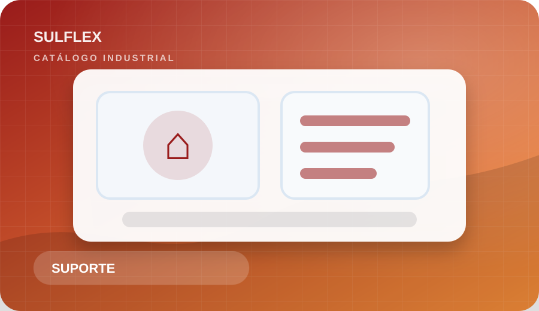
Fabricação de Suportes
Produção de suportes para equipamentos, tubulações, painéis, bancadas e utilidades.
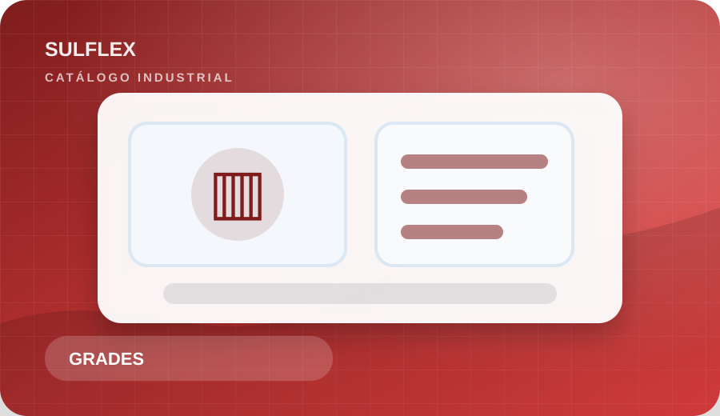
Portões, Grades e Proteções
Adequações de segurança patrimonial e operacional com acabamento resistente.
Elétrica
3Materiais e serviços para manutenção elétrica predial e industrial, com foco em segurança e continuidade operacional.
Instalações e Adequações
Pontos elétricos, circuitos, quadros, tomadas industriais e melhorias de infraestrutura.
Iluminação Industrial e Predial
Troca, instalação e melhoria de luminárias para áreas internas, externas e operacionais.
Manutenção Preventiva
Inspeções, correções e apoio para reduzir falhas em sistemas elétricos.
Hidráulica
3Soluções para rede hidráulica, reparos prediais e apoio em manutenção de água, esgoto e utilidades.
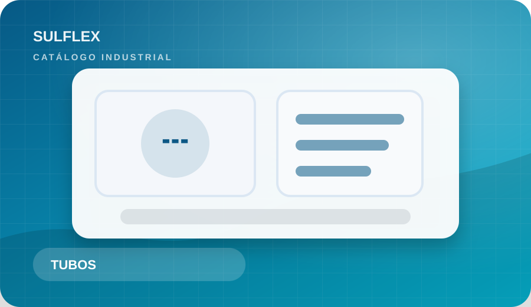
Tubulações e Conexões
Instalação, substituição e reparo de linhas hidráulicas em áreas prediais e operacionais.
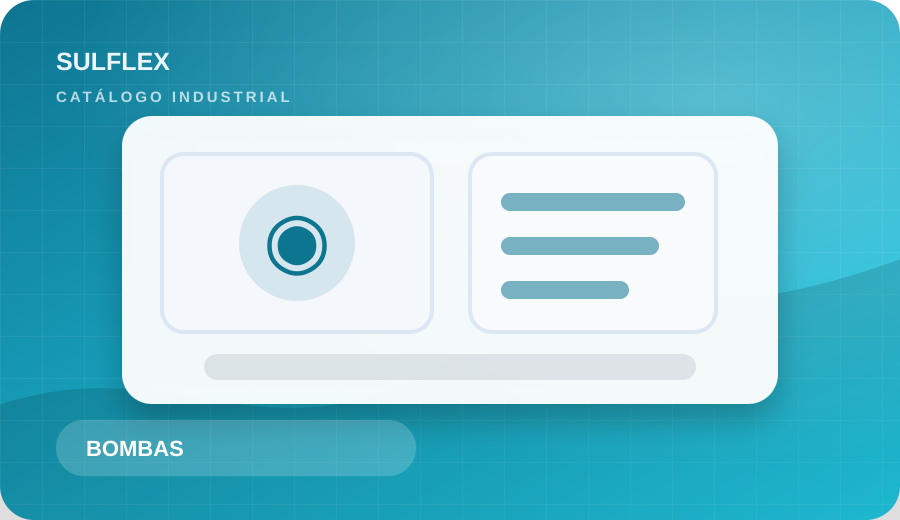
Bombas e Válvulas
Apoio em manutenção, troca e instalação de componentes hidráulicos.
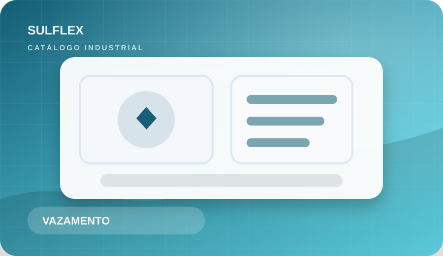
Vazamentos e Manutenção
Correções rápidas em pontos de vazamento, registros, torneiras e redes de apoio.